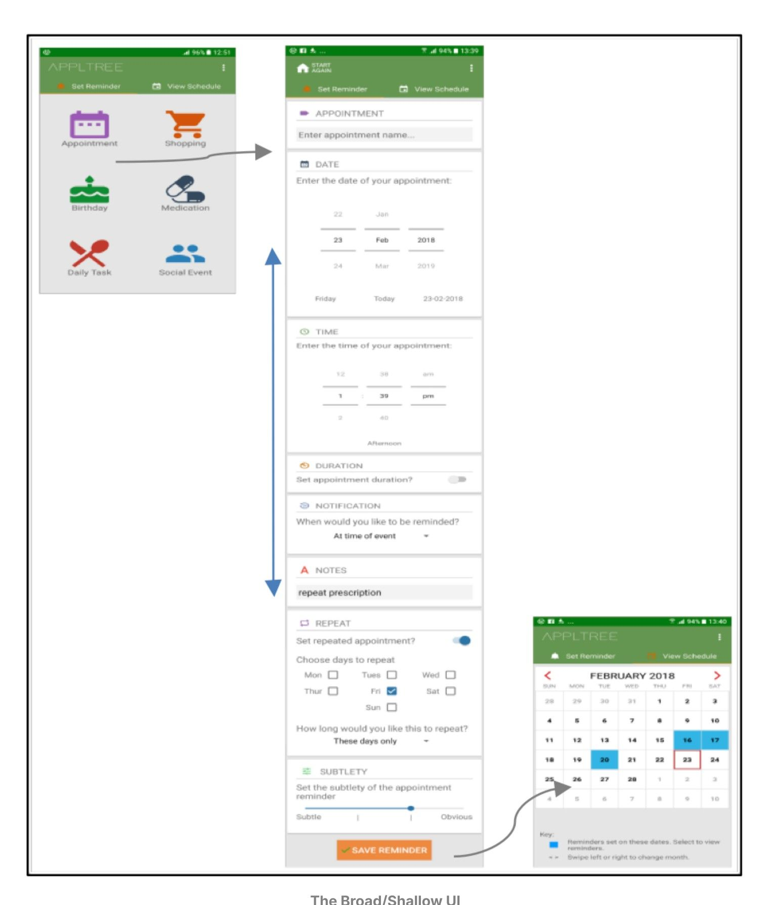
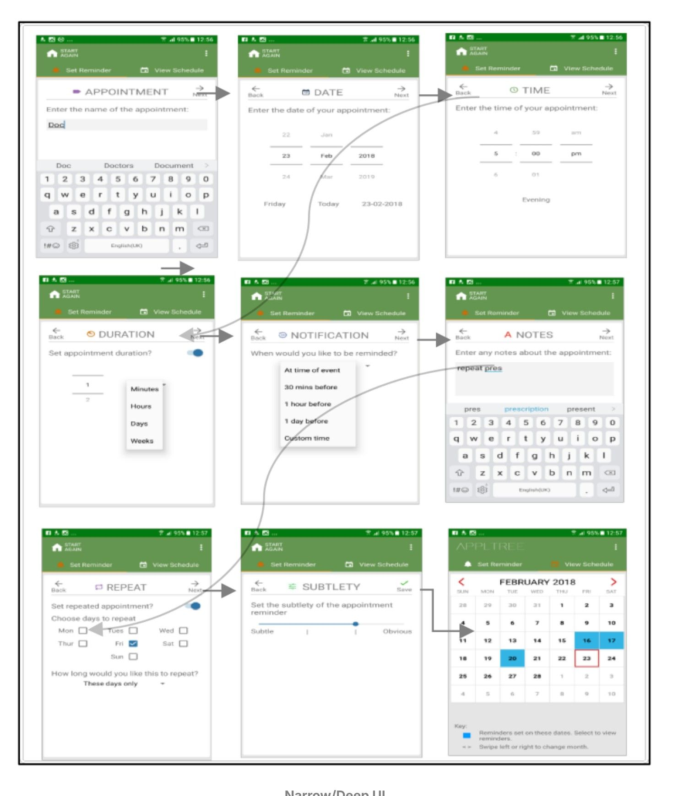
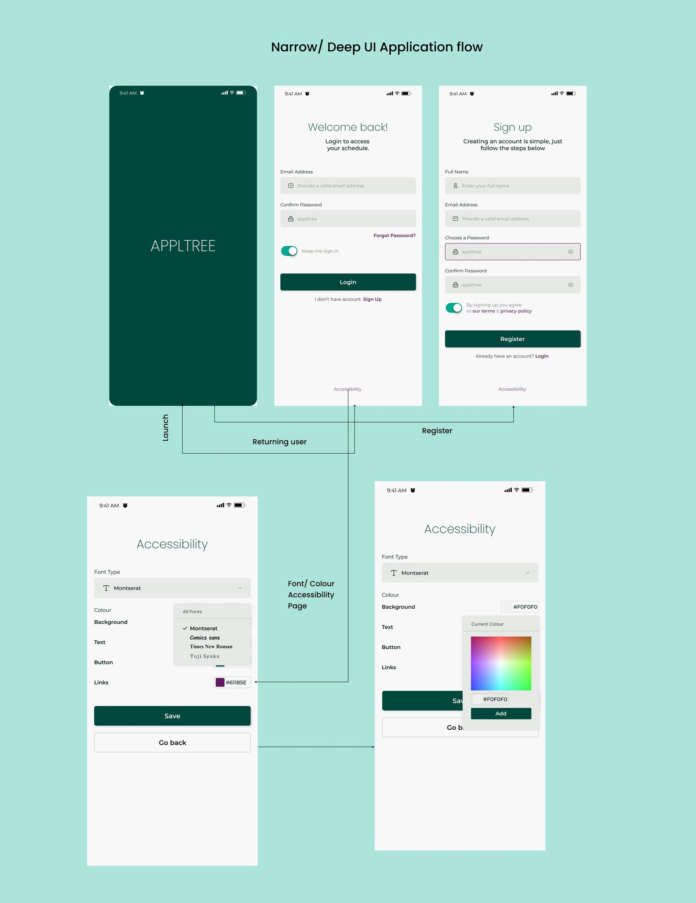
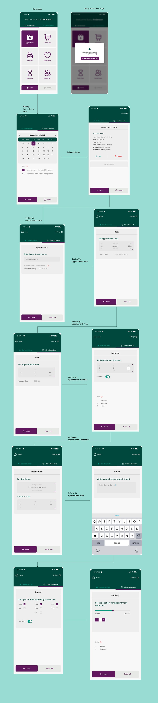
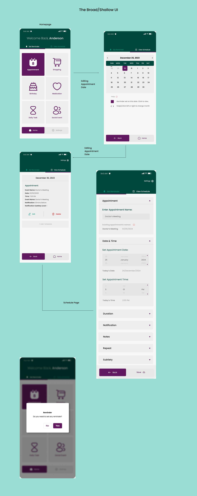
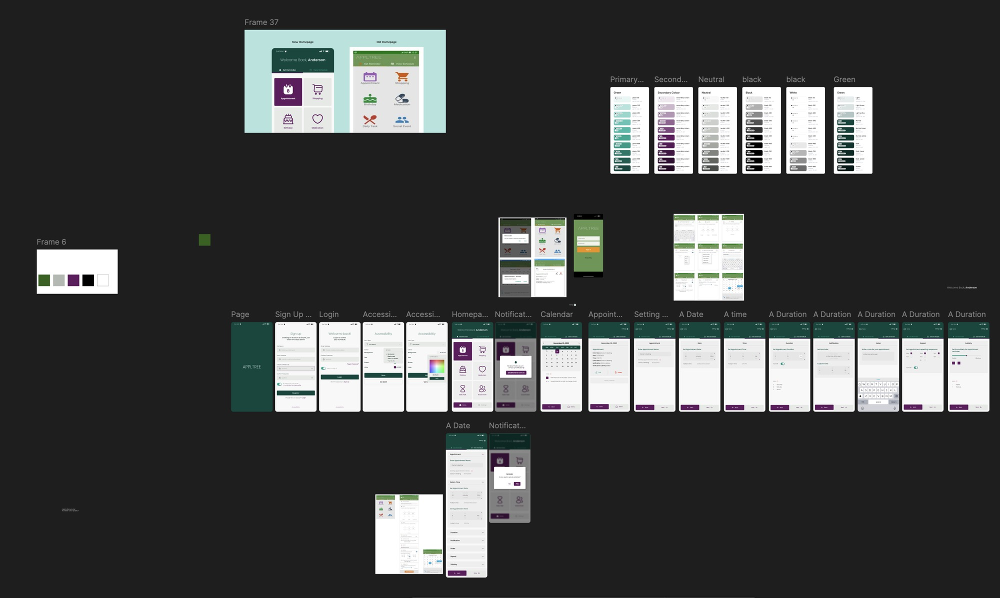

Redesigning a scheduling app used by 500+ people with cognitive impairments
A team redesign of APPLTree, a scheduling app for people with cognitive impairments grounded in published academic research, focused on a modern interface, deeper accessibility customisation and guided visual navigation.
The problem
APPLTree is scheduling software used by more than 500 people with cognitive impairments, originally designed and studied in the published paper "Designing ApplTree: Usable Scheduling Software for People with Cognitive Impairments" (Jamieson et al., 2020). It worked, and it was built with usability and accessibility in mind from the start.
But design conventions and accessibility expectations move on, and a live app with hundreds of real users doesn't get to stay static. Reviewing the original research and interface, the gap wasn't in intent, it was in execution: a visual language that had aged, accessibility settings that stopped short of real customisation, and navigation that leaned on text and reading rather than recognition, exactly the kind of friction a cognitive-impairment-focused tool can least afford.
My role
I served as Senior Designer and Researcher within a three-person team, leading the research review and design direction for APPLTree's redesign. I set the direction for identifying where the existing interface fell short, then guided the team through rebuilding both of APPLTree's interface modes end-to-end in high fidelity, including planning and running usability testing within the constraints we had.
Grounding the redesign in real research
Rather than redesigning on instinct, I reviewed the original research paper and existing interface and identified five specific areas with room to improve:
- User interface limitations — The original design was functional but dated; a more refined interface could reduce cognitive load and improve engagement.
- Accessibility challenges — Room to go further on colour contrast adjustments and customisable font sizes.
- Icon-based navigation — Replacing reliance on text menus with icons and symbols for key actions, reducing reliance on reading.
- Navigation & usability — Simplifying interactions so scheduling tasks are quicker and easier for users who may struggle with complex navigation structures.
- Guided navigation with visual hints — Small animations and subtle glow effects to highlight the next step, keeping users on track without feeling overwhelmed.
Redesign
APPLTree offered two interface modes so users could pick what worked for them: a Broad/Shallow layout with everything on one long page, and a Narrow/Deep layout that breaks tasks into steps to reduce cognitive load. Both needed their own redesign.
Before: two interface modes


After: redesigned for clarity and accessibility
The redesign introduced a consistent dark-green brand identity, a dedicated accessibility settings screen for font and colour customisation, and icon-led navigation across both interface modes.




Usability testing
The redesigned interface was tested with 3 users. That number was capped by policy constraints on recruiting people with cognitive impairments for research, the same barrier the original research paper identified, not by choice. Getting access to this population at all took real effort from the team.
It's still worth naming as a limitation rather than glossing over it: three users is enough to catch obvious friction, not enough to validate a redesign with the confidence a population of 500+ people deserves. The testing we ran shaped real decisions in the redesign, it just doesn't stand in for testing at scale.
Lessons & recommendations
- Understanding user needs is critical. Thorough research and involving users with cognitive challenges in the design process surfaces pain points that aren't obvious from the outside.
- Iterative design leads to better usability. Refining the interface in cycles, rather than shipping one pass, kept it closer to what users actually need.
- Accessibility is an ongoing process. Real improvements were made, but accessibility requires continuous effort as standards and user feedback evolve.
Looking ahead, I'd prioritise: working within the team's existing access to grow the testing cohort past 3 participants, so validation better reflects the 500+ people who rely on the app day to day; exploring AI-driven personalisation that adapts the interface to individual user behaviour; and expanding cross-platform compatibility so the app works consistently across more devices.
Reflection
Leading research and design for a tool used by 500+ people with cognitive impairments, on a testing budget of 3 users, taught me to be honest about what a small sample can and can't tell you. A more accessible-looking interface isn't the same thing as a more accessible one until enough real users have used it. If I revisited one decision, it would be pushing earlier, before the redesign was locked, for a larger testing cohort within the same policy constraints. Three users told the team where the obvious friction was; validating a redesign for 500+ people meant we needed more voices in the room, even a handful more would have changed how confidently we could stand behind it.